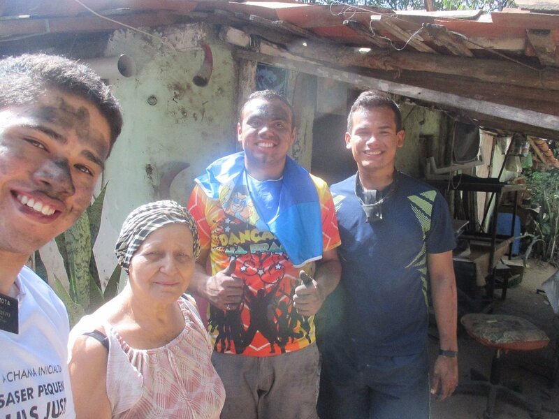

How can my personal experiences influence my professional life?
I served as a missionary for The Church of Jesus Christ of Latter-day Saints
Daniel and his family have always been very special people, they had a lot of difficulty understanding the potential they could achieve, Daniel was always more direct and difficult to talk to because he was a man with a firm hand, but I learned that with the influence of God's spirit and the talent it gave me to have patience, could help Daniel see his bright future.

As a missionary like many others, this experience gave me the ability to ask questions to discover the needs of my investigators, help them overcome their challenges and extend my helping hand to whatever their needs were, such as in this case, harvesting homemade charcoal.